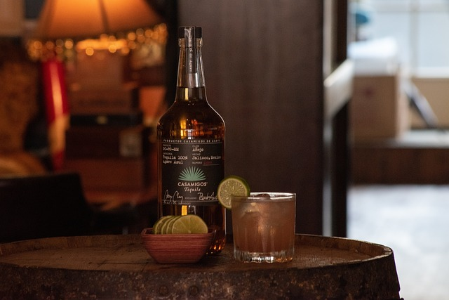
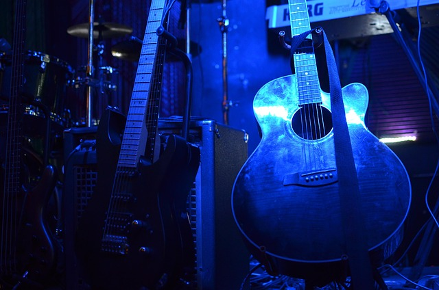
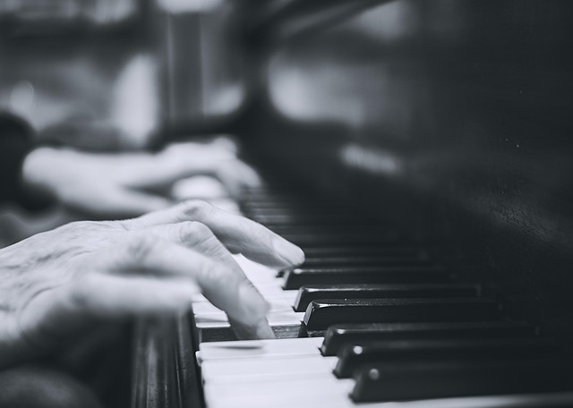

A Band That Never Stops Playing
For as long as anyone can remember, the same five piece jazz band has played every night at the Kelp Resorts Bar, their music drifting out into the street like a warm, familiar spell. Patrons swear they’ve never seen the musicians enter through the front door or slip out after closing, yet when dusk settles, the saxophone, trumpet, piano, upright bass, and drums come alive as if summoned by the evening itself. The band members appear onstage without fanfare, already mid tune, as though they’ve been playing for hours before anyone arrived.

Jazz Standards Given New Life
Their repertoire leans heavily on jazz standards—smooth, smoky renditions of classics that seem to bend time. Some nights the saxophone croons with a melancholy sweetness; other nights the trumpet cuts through the room with bright, brassy joy. The rhythm section keeps everything grounded, the piano weaving delicate flourishes while the upright bass and drums pulse steadily beneath it all. Regulars say the music feels both nostalgic and strangely new, as if the band is channeling versions of the songs no one else has ever heard.

Relaxing Music Abounds
Despite countless attempts to learn more about them, the musicians remain an enigma. They never speak between sets, never mingle with the crowd, and vanish the moment the final note fades. The bar staff insists they don’t use the back entrance, and security cameras reveal nothing but empty hallways. Yet every night, without fail, the band returns—unchanged, unhurried, and untouched by time—filling the room with music that lingers long after the lights go out.